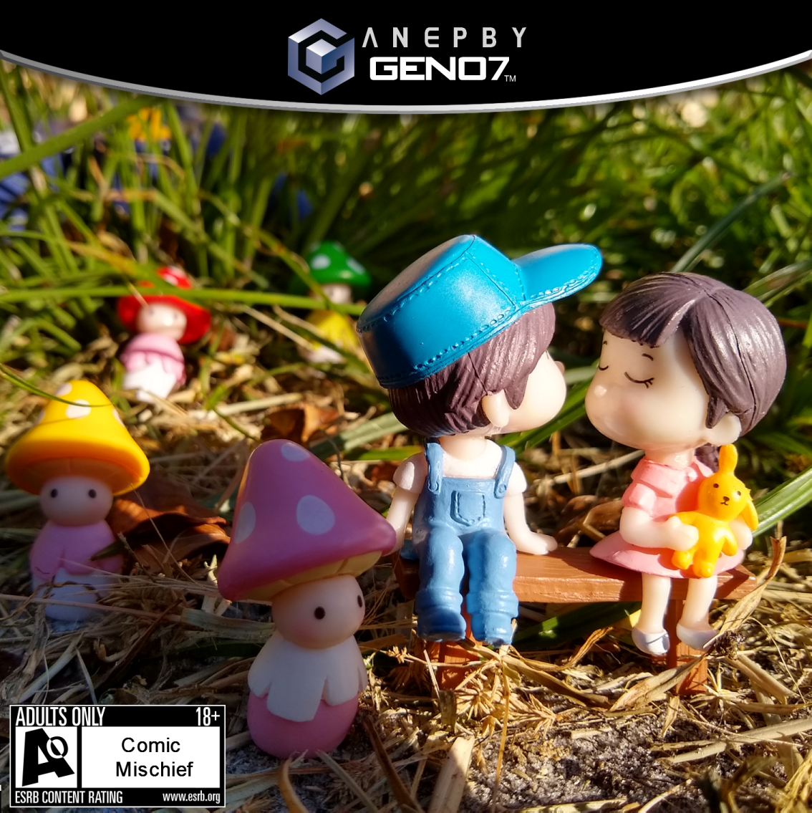
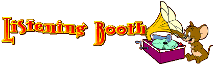

|  | |
|---|---|
| RELEASED UNDER THE NAME | Geno7 |
| RELEASED | September 14th, 2021 |
| GENRES | Zolo, Video Game OST, Orchestral, Electronic, Polka, Electro-Funk, "Chiptune" |
| RUNTIME | 13:41 |
| ALBUM ARTWORK | Geno7 |
| PERSONNEL | Everything by Geno7 |
| MUSIC VIDEOS | |
|  |
|
|
DOWNLOAD AS .ZIP FROM MEGA (MP3) |
Maybe it's just the personal bias of having grown up with it and attached so many fond memories to it, but the Nintendo GameCube is a long standing favorite console for me. So in August of 2020 when I realized that the 20th anniversary of the console was coming up fast, I scrambled to find something I could do to properly pay tribute to it.
Originally, the idea was to talk to one of my composer friends and see if they and any others might like to collaborate on an album of GameCube-style songs, given they're a pretty astute composer who had once done a small song that was able to mimic the style of Paper Mario: The Thousand Year Door's OST rather impressively, and I figured I would need all the help I could get because the turnaround time on this thing was gonna be pretty tight. Unfortunately they declined, saying that they already had their fingers in way too many artistic pies as it is and they had to exercise restraint with taking on too many projects at once, something I myself heavily relate to.
So I was on my own with this one. A little under two months to singlehandedly make an EP from nothing. Fuck it, I've dealt with tighter deadlines.
By the time it had been 20 years since consoles like the NES came out, people were making Chiptune music in the style of those consoles, so I figured, why not take the step and do a "Chiptune" album in the style of the GameCube now that it's 20? I put Chiptune in quotes because the GameCube doesn't really have a dedicated "sound chip" the way we think of older consoles having them. The GameCube was the first Nintendo console that allowed for streaming CD quality audio, so if you wanted to you didn't have to bake a bunch of samples into the game and program them to play in-engine, you could just have the music be audio files. Although a lot of times, especially in cases where you'd want the audio to sync with the gameplay (which is kind of a Nintendo staple) You'd use MIDI audio, which is basically the idea of in-engine audio taken to its logical extreme with samples that were, again, CD quality, and more sound channels than you could ever even need.
And composers of the time were taking advantage of this newfound freedom by going completely apeshit with their OSTs. The lack of limitations or even a definite genre or sound is in itself what defined the sound of the GameCube. So the question becomes, how do you take something so limitless and boil it down to an identifiable style?
As it turns out, the GameCube does in fact have a really identifiable timbre about its sound. But it doesn't come from hardware limitations like the older systems, it comes from the fact that so many composers were using the same equipment around that time. Commercially available synth decks and sample CDs like the Roland SC-88, Proteus 2000, Kurzweil K2500 or Best Service Gigapack. That's right, commercially available, meaning an average joe could recreate a GameCube OST 1:1, provided they know what equipment to use and where to find it. And thanks to the rise in popularity of stuff like SiIvagunner, the humor of which relies heavily on recreating songs from games using the original equipment or samples, a growing subculture has emerged of people who spend all their time working together to comb through game OSTs and identify the sources of all the instruments that pop up in songs.
The entire backbone of what I've been able to accomplish with this album is because I'm in a discord server that works together to find this stuff and catalogue it in a big spreadsheet, and even before I had the idea to make this album I was obsessively collecting any digital recreations of these sample decks I could get my hands on.
So yeah, that's kinda... How this album ends up being GameCube "Chiptune". And part of me hopes that mimicking the GameCube's vibe will start to be a thing that picks up in Chiptune and VGM circles. But who knows.
Most of the staple games on GameCube were rated E for everyone by the ESRB, and really commonly you'd find that the only content descriptor for a game would be "Comic Mischief", which is where the album gets its title. I think the "Comic Mischief" descriptor is still in use today but it's something I always associated really heavily with the GameCube era. Even though the descriptor is usually only associated with E-rated games, you can see on the cover that the ESRB rating is Adults Only. For some reason that idea was sorta funny to me, like the idea of a game being rated Adults Only with "Comic Mischief" as the only reason given.
The cover of the album was a really fun spur-of-the-moment idea I had. I've always been really fascinated by like, miniatures and stuff like the photography in the I Spy books, and I think I wanted something that could recreate that sorta magical garden-y feel a lot of the best GameCube games had, I guess Pikmin 2's promotional art was also a big influence, hah. So I opted to go on Amazon and find the cutest looking set of cheap garden knick knacks I could find that would fit the vibe I was going for, then I spent an afternoon in my backyard crouching on my knees setting them up in the grass and taking pictures of them with my phone in the 90+ degree Florida heat. By the end of the process my back was killing me and I was sweating like a pig but I really like how a lot of the photos came out, it's a shame I didn't get to use a whole lot of the other ones that came out of the shoot besides just the cover. Maybe if I ever decide to do a physical release and I need a back cover and a booklet. I do have a dropbox folder of a bunch of stuff from the shoot if anyone's curious.
Something I don't think my friends are ever gonna let me live down is when I was putting together the cover's GameCube packaging look, the top bit which says "AN EP BY" was originally going to say "AN ALBUM BY" but the obtuse spacing of the letters made it look like "ANAL BUMBY".
Click on a track for more info.
If I was going to be making a tribute album to the GameCube, I figured the best way to start it out would probably be by referencing the Welcome to GameCube World! Tech Demo, often also called the "Peach's Castle" Tech Demo. Basically it was a tech demo Nintendo sent to developers to get them interested in making stuff for the GameCube and it showed off the system's graphical and processing capabilities. As such, it's probably one of the earliest known playable things made for the system, and it seemed fitting to begin the album in the way that the GameCube itself sorta began. In the demo, you play as a little red levitating arrow, and at the beginning the arrow knocks on a large set of double doors, causing them to swing open and let it inside. The album starts with a sample of the sound effect of the arrow knocking and the doors swinging open. Well, sort of.
Something that ended up happening a lot during the making of the album is I would need a specific sound or instrument from something but it wouldn't be anywhere in the spreadsheets and presumbably hadn't been found yet, so I'd literally have to dig and find it myself. I couldn't sample the knocking and door opening sounds directly from the demo because music begins immediately and covers up the tail end of the swinging sound, so I had to find the original sample CD from which the knocking and swinging sounds were taken and recreate it from scratch. And miraculously I was able to actually find it - a sound file called "Cartoon,Knock On Door,Creaks Open,Time Bomb Explodes,Explosion" on the Warner Bros. Sound Effects Library CD contained both the knocking and the door creaking. I had to fuck with the pitch of the creaking sound to get it more accurate but it was unequivocally the same sound.
So, on to the actual song - the person I'm most obviously trying to mimic on this one is definitely Norio Hanzawa, specifically his OSTs for Wario World and Stretch Panic. Yes, I said Stretch Panic. A PS2 game. In fact, the intro music to Stretch Panic was probably the biggest reference point, and the title of the song is even a reference to the game's tagline - "This is the unusual story of an unusual little girl." And you might think, why the fuck am I committing the adultery of referencing a PS2 song so heavily when this is supposed to be a GameCube themed album? Well, I figured at the end of the day, the OSTs for Wario World and Stretch Panic are almost identical stylistically, probably due to them having been made around the same time by a lot of the same crew, so it's just sort of a nebulous reference to that whole thing. I dunno fuck you it's my album
I'm a huge fan of Norio Hanzawa's music and of Treasure in general, so it was really fun seeing if I could accurately forge his style. sleigh bells, cheesy Roland brass, really high choir voices, abrupt bits where there'll just be a rapid flurry of apreggiated notes, orchestral hits, the iconic drum roll sound where he'll loop a drum sample and gradually increase the volume (a trick he's been using since the Sega Genesis days) and that fucking flexatone sound that he uses all over Stretch Panic and Wario World. I remember grinning like an idiot when I found it, and you can hear it pop up again on A Kidnapping! For anyone looking for it, it's E-MU Proteus 2000 007:060 kit:Kit 02, the C4 note.
I tried to make the song sound as much as possible like it was synced up to an imaginary intro cutscene, so there's a lot of starts and stops and changes in mood to make it seem like it's underscoring stuff happening, and I tried to kind of tell a little story with it. It starts out sorta mysterious and whimsical, then a grand tragedy strikes or some kind of villain shows up, then it ends on a heroic and sorta hopeful note. Although, I think the tail end of the track brings in more influence from Pikmin 2's intro cutscene than any of the Hanzawa sounds on the rest of it.
Another thing you'll notice- leitmotif is all over this album, which is something of a Nintendo OST staple, especially the works of Kazumi Totaka. The tracks were made in such a way that I can't really remember what songs originated which motifs but there are tons of little riffs that pop up in multiple places on the album, and I figure it might be fun to see how many people can pick them out.
This is kind of intended to be the "title screen music" for the imaginary game this album scores. I think the biggest reference point was definitely the title screen music from Hirofumi Taniguchi's fantastic Chibi-Robo! soundtrack, most obviously in how it immediately blasts you in the face with a barrage of cartoon sound effects to rival Penis Music. I basically scoured the period-accurate sound effect CDs I had for as many goofy sound effects as I could find and tried layering them on top of one another as rhythmically as I could manage. My favorite of them is probably that duck quacking sound you hear all the time in SpongeBob.
The song starts in 7/4 and then switches to 5/4 to slake my raging fetish for weird time signatures. I think there was also a big Cardiacs influence (surprise surprise) with me trying to write something that just kind of has as many different chords as possible and trying to make them glide into each other in a coherent way, but also with all the bits where the whole tone scale gets used, which is another raging fetish of mine admittedly. at least though it's relevant here because GameCube games did definitely use the whole tone scale a bunch whenever possible.
The title of this track is actually a really obscure reference that pops up again a little later. In the audio files for Luigi's Mansion, there's an unused sound clip of what sounds like a woman saying "Welcome, Welcome To". This is actually a chopped and looped version of an audio file of a woman saying "Welcome to Acid Theater" from a sample CD, specifically Spectrasonics Distorted Reality Partition I, an audio file labeled "Bad Acid.wav" It always fascinated me that this audio file was in there unused and I can't begin to imagine what it would've been used for. But it's the kind of weird GameCube sample source geek reference that felt fitting for a title.
This track was definitely meant to suggest Hajime Wakai and Kazumi Totaka's music for the aboveground areas in Pikmin 2, though funnily enough it begins with a section that's heavily influenced by something completely unrelated - there's a song on the Kemono Friends OST called "Nagi" which I always kind of liked because it sort of reminded me of either a Pikmin song or a bit of the score from Castle in the Sky, so I sort of let that song influence the intro to this one.
Pikmin does a thing that a lot of GameCube games love to do, and a lot of Nintendo games in general love to do, where the music is dynamic and reacts to what the player is doing, and the different "phases" of the song sort of reference different phases that a Pikmin song goes through during gameplay. By default, the song usually won't have drums, but different drum tracks get added depending on whether the Pikmin are carrying stuff or if they're fighting an enemy, which is why the song starts without drums and then adds them. there's a little section that's sort of menacing to suggest an enemy might be near. Then, the song ends with a sort of lullaby version of the main motif played on celesta, which is what usually happens to the music in Pikmin when the day is nearing sunset.
if you notice too, there's kind of a forest ambience running under the whole song, which was maybe a little weird but I felt like it needed that extra bit of atmosphere to it, to really make you feel like you're walking around in a lush, nature-y area.
I can't totally remember what the exact reasoning behind the title was. I know it's meant to suggest the name of a place that the music may be the level theme of, and for some reason I tend to really like place names that are like. A literal geographical thing mixed with an obtuse emotional concept. Which I guess does fit the naming scheme of Pikmin levels. I also probably had the track name "Glen of Misapprehension" from XOC's Video Game: The Movie: The Game: The Soundtrack on the brain.
This one is sorta meant to suggest Pikmin 2's cave music. Can you tell I like Pikmin?
The cave music is where Wakai and Totaka really get to cut loose and do weird, atmospheric, experimental shit, and I tried my best to capture that sort of vibe with this. The song again kind of tries to imitate Pikmin's dynamic soundtrack in the way it slowly builds and adds sections. I feel like when I finished the song I worried it might be a little too repetetive or boring but like, it might just be that I'm not used to writing stuff this spacey and deliberately atmospheric. And when I peddled the album around places like 4chan I did get one person mention this track by name and tell me how much they liked it, so eh I guess it's good
The song is in 7/4 but the drum beat at the end is in 4/4, though the rest of the song is still playing in 7/4 over the drum beat, so I think that makes that section polyrhythmic? or polymetric, I can't remember which is which. funny enough, the bass bit that the song starts with is actually based on the sound of me scrubbing through instrument samples in my DAW - the riff plays G in four octaves and then D# in four octaves. One of my sample packs has the audio files of an instrument in four octaves for each note, and it would basically make that sound when I'd scrub through the notes in the browser. If that makes any sense. it's a bit tough to explain. But either way it's a little bit like Pikmin 2's Emergence Cave. We then have the main riff which is almost a little too obviously suggestive of Hole of Heroes with a bit of Jellyfloat Pool for good measure, but idk I just really liked those riffs. I wanted something kinda swirly and sparkly and mysterious sounding like it.
The title is another like. Literal geographical thing + obtuse emotional concept thing. idk why but I sorta had this idea floating around in my head of like. When you wake up and can't remember a dream that you had, where does the dream go? Every dream that everyone forgets goes to this cave. It seemed like kind of a cool and sorta fairy tale-ish idea. Maybe I should flesh it out sometime. Actually wait isn't that a plot point in Klonoa or something? Fuck
Here we have the Luigi's Mansion track. Kazumi Totaka was definitely a huge reference point all throughout the album, if you couldn't tell.
Usually with each track, to make it kinda more "authentic", I would avoid sampling instruments directly from the files of a game and prefer to go directly to the original sample CD or synth deck used in that game. For example, the strings on here aren't sampled from Luigi's Mansion's game files, they're the actual string instrument used in the game - "String Marcato" from the Digidesign SampleCell Factory Library. However, the theremin sound in this is a rare example of an instrument I had to just get from the game files because noone had found the source of the theremin sound, at least not at the time of the album's creation.
This is the only time on the album where I actually sing on a track, even if it's just humming. In Luigi's Mansion, Luigi would actually hum along to the fucking music during a lot of the game, making the music often a weird blend of diagetic and non-diagetic, which I absolutely loved and felt I had to reference somehow. I don't think you realize how fucking good of a voice actor Charles Martinet is until you try to like. sing while sounding nervous. it's a lot harder than it sounds
Here we sorta start to get the first instance of a returning motif. The bridge on this one plays the "menacing" section of Glen of Ambedo on the organ while the lead is humming the main motif from the later track A Kidnapping! I always find it cool whenever I'm able to take multiple different parts from different songs and fit them together like puzzle pieces.
A Psychomanteum is a room in a house dedicated specifically for contacting spirits, and I figured it fit given the spooky vibe and that the areas in Luigi's Mansion are rooms that are all just sorta plainly named for what function they serve in the mansion.
This track was kind of a general GameCube era Kazumi Totaka imitation, but I think it mainly draws from the Animal Crossing OST and certain caves in Pikmin 2, especially the Railroad Room. In fact I think I sorta Mandela effected myself because listening back to it I could've sworn the train whistle sound effects were a direct reference to train whistle sound effects in the Railroad Room music but alas, there's only train bells. I guess it's less derivitive than I thought, whew
Totaka seems to really like doing this style of song where it's mainly driven by a super rudimentary sounding drum beat from something like a Roland TR-808 and then over that do a bunch of weird little phrases with a ton of space between them that are deliberately only barely cohesive. One of Totaka's signature sounds also seems to be the MiniSolo preset from the E-MU Proteus 2000, that sort of whiny, almost trumpet-like synth that plays a lead part in this, and something you'll hear all over Animal Crossing, Luigi's Mansion and Pikmin. The clarinet part is also really Animal Crossing-y and maybe a little Luigi's Mansion-y, but I think you can probably hear a pretty similar clarinet part on 4 AM from Animal Crossing. I also really liked the idea of having a sort of dark, mysterious song randomly have a lick that just sounds super cute and reassuring, which is where that piano bit comes from. It's similar to a phrase in Animal Crossing's 3 PM music, though it's a little different contextually.
As far as I can remember, the other two bits of the song - the sort of twiddly flute bit and the shimmering synth chord, being the sounds "ENIGMATIC" and "CLEANSING" respectively, off the Spectrasonics Distorted Reality 1 CD - aren't really samples that were used in any specific GameCube song, I just sorta thought they'd be the kinds of samples a GameCube composer from the time would use, given Distorted Reality does get used a lot by GameCube composers. And I just kinda wanted to give the song an extra layer of spacey weirdness.
Like most of the album's song titles, the title is another title that's supposed to evoke mental images of the kind of place a song like this would be level music for. And again sort of taking a Pikmin 2 cave naming scheme, most obviously referencing the Subterranean Complex. I dunno why but when I was making this I was looking at a really specific image of an abandoned building in Florida where there was kind of an underground area with holes in the ceiling which light was shining through and actually allowing plantlife to grow, and it struck me as something really Pikmin-y. I wish I could remember where I found that image. Ah well
Interestingly, apart from maybe a resemblance to the ghost-catching music from Luigi's Mansion, this is the track that has the least influence from an actual GameCube OST and takes more influence from an electronic music artist who did music that would often sound like a GameCube OST. In fact, I think her work has had a monumental influence on the whole album, not only in her music but insofar as the idea that this kind of music can exist in a standalone album context. I don't think there's enough praise I could heap onto Mami-Chan, an artist who has an absolutely incredible output and quickly became one of my favorite musicians, and it was kind of gut wrenching to find out that she'd died really recently, only shortly before I'd discovered her, and still languishes in relative obscurity. If there's anything you take away from this, I'd implore you to check her out. Her music is equal parts childlike innocence and dark, experimental complexity.
Mami-Chan's Otonamopée is an album of goofy childlike electronic compositions that seem to use a lot of the same hardware GameCube composers use, and ends up sounding a lot like a GameCube or, I suppose more fittingly, Nintendo 64 or Playstation OST, given it predates the GameCube by several years. I'd definitely check it out if you liked this album and want more material that sounds like imaginary video game music. The track "Pachinko" was definitely the most obvious influence, basically right from the opening brass oom-pahs. Aside from a similar ending where the song slows down and then gradually speeds up again to a frantic pace, I did try as best I could to take the track in a different direction and make it a bit more layered.
There's a sort of transitional phrase at the end of each "verse" where the time signature briefly goes really weird. I didn't have the presence of mind to mark it at the time but my best count of it is 2 measures of 3/4, a measure of 5/4, another two measures of 3/4, another measure of 5/4, another two measures of 3/4 and then a measure of 4/4 again. though the last measure in this pattern starts a hair early so it's hard to count it exactly.
I also distinctly remember trying out ADHD medication for the first time while I was making this track and I legitimately wonder if it had any kind of effect on the decisions I made with it. Hmph.
When I made this I envisioned goofy chase music or some kind of encounter with an affable Goldfish Poop miniboss who harasses you throughout the game. The title comes from a line of dialogue FLUDD utters in Super Mario Sunshine when you're chasing Shadow Mario - "A kidnapping! Stop the criminal in his tracks with some water!" Which just makes me think of how I'd planned to do a sort of tropical Mario Sunshine-influenced track but ran out of time. Shame.
This track has three sections that basically go through a greatest hits of GameCube staff credits music, and it's also a track where I try to shove in as many recurring motifs from the rest of the album as possible.
To start, a funky riff on Luigi's Mansion's staff credits, with Totaka's trademark squishy bass sounds and Proteus MiniSolo. Funk music has always been a genre I enjoy immensely but for whatever reason is kind of a blind spot, and making this track lead me to get a bit more acquainted with funk for research, and I really hope I was able to provide a bass riff with the appropriate level of "stank".
The song's verses call back to the verse motif of Glen of Ambedo, then lead into the "enemy near" riff from the same song, then reference Subterranean Thicket. between the Subterranean Thicket phrases we get some little turntable scratches, a reference to the scratched Luigi samples in the Luigi's Mansion credits, but something else important to point out is the sample being manipulated is the unused "Welcome To..." sample in Luigi's Mansion's data files which I brought up earlier. I don't have an actual turntable set but I do have a VST called "Wave Traveler" which allows you to mimic a turntable scratching by manipulating a sample using a sort of graph to "travel" backwards and forwards across the sample. It's something I use basically whenever I need any turntable scratch sounds.
We then get a reference to the main motif from A Kidnapping!, then we go back into the main riff, over which there's a callback to The Unusual Story. Then, we seague into a big orchestral sound in a manner not too dissimilar to Wario World's credits music, where we come back to The Unusual Story's "heroic" section. After that, we have a section referencing Animal Crossing's K.K. Slider songs, complete with rain ambience, where we have a more "peaceful" reprise of Psychomanteum. I thought it would be kind of a fun exercise to see if I could make the same song sound both peaceful and ominous depending on the context and arrangement. I can't actually remember if I wrote Psychomanteum or this K.K. section first though. Hrm.
I didn't really wanna use the actual K.K. voice samples since I felt like the reference might be a little too obvious, so I just used his whistling and guitar sounds. This section required me to displace the notes of the chord in a weird way to make it seem like the guitar was "strumming", and I did it manually because I didn't yet realize FL Studio had a built-in strum tool and I am very intelligent.
From there, we get one last go of the song's main riff and that's about it. I still really like hearing the acoustic guitar play the funk bassline from earlier, it's a neat way to lead back into the main part.
Take a moment to soak in the utter erudite genius of the title! Get it? "Staff" Credits? Short-"Staffed"? Hee hee hee! I'll get my coat.
{kind=link}
{kind=link}
{kind=link}
{kind=link}